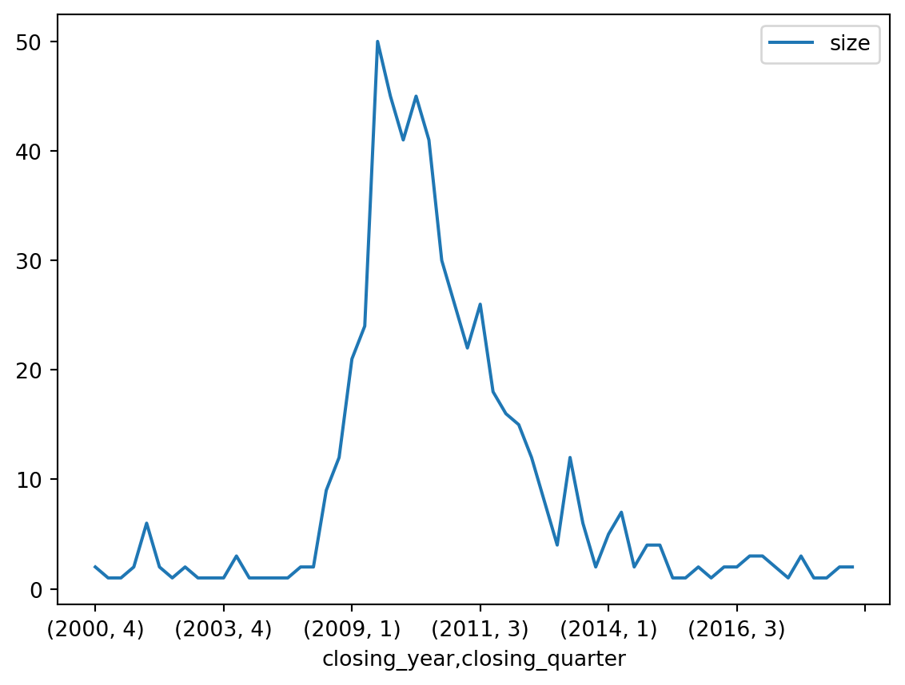
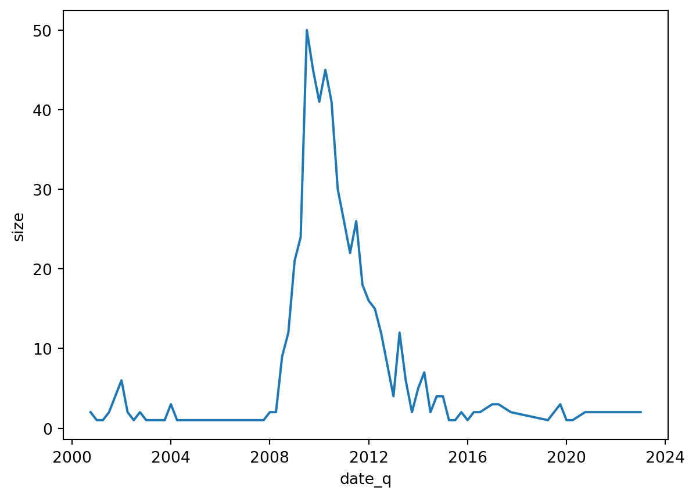

import pandas as pd
import numpy as np
import seaborn as snsPython Lab 5 - Dates and Times
Load Libraries
Question 1
Consider the following example DataFrames.
banks = pd.read_csv('https://bcdanl.github.io/data/bank_failures.csv', parse_dates=["Closing Date"])Q1a
Add the new variables, closing_quarter and closing_year, to the DataFrame banks. - closing_quarter: the quarter in which the bank closed (1, 2, 3, or 4) - closing_year: the year in which the bank closed
banks = banks.assign(
closing_quarter = banks['Closing Date'].dt.quarter,
closing_year = banks['Closing Date'].dt.year
)
banks| Bank Name | City | State | Cert | Acquiring Institution | Closing Date | Fund | closing_quarter | closing_year | |
|---|---|---|---|---|---|---|---|---|---|
| 0 | Signature Bank | New York | NY | 57053 | Flagstar Bank, N.A. | 2023-03-12 | 10540 | 1 | 2023 |
| 1 | Silicon Valley Bank | Santa Clara | CA | 24735 | First–Citizens Bank & Trust Company | 2023-03-10 | 10539 | 1 | 2023 |
| 2 | Almena State Bank | Almena | KS | 15426 | Equity Bank | 2020-10-23 | 10538 | 4 | 2020 |
| 3 | First City Bank of Florida | Fort Walton Beach | FL | 16748 | United Fidelity Bank, fsb | 2020-10-16 | 10537 | 4 | 2020 |
| 4 | The First State Bank | Barboursville | WV | 14361 | MVB Bank, Inc. | 2020-04-03 | 10536 | 2 | 2020 |
| ... | ... | ... | ... | ... | ... | ... | ... | ... | ... |
| 560 | Superior Bank, FSB | Hinsdale | IL | 32646 | Superior Federal, FSB | 2001-07-27 | 6004 | 3 | 2001 |
| 561 | Malta National Bank | Malta | OH | 6629 | North Valley Bank | 2001-05-03 | 4648 | 2 | 2001 |
| 562 | First Alliance Bank & Trust Co. | Manchester | NH | 34264 | Southern New Hampshire Bank & Trust | 2001-02-02 | 4647 | 1 | 2001 |
| 563 | National State Bank of Metropolis | Metropolis | IL | 3815 | Banterra Bank of Marion | 2000-12-14 | 4646 | 4 | 2000 |
| 564 | Bank of Honolulu | Honolulu | HI | 21029 | Bank of the Orient | 2000-10-13 | 4645 | 4 | 2000 |
565 rows × 9 columns
Q1b
Count the number of banks that were closed for each pair of year-quarter.
closing_year_q = (
banks
.groupby(['closing_year', 'closing_quarter'])['Bank Name']
.agg(['size'])
)
closing_year_q| size | ||
|---|---|---|
| closing_year | closing_quarter | |
| 2000 | 4 | 2 |
| 2001 | 1 | 1 |
| 2 | 1 | |
| 3 | 2 | |
| 2002 | 1 | 6 |
| 2 | 2 | |
| 3 | 1 | |
| 4 | 2 | |
| 2003 | 1 | 1 |
| 2 | 1 | |
| 4 | 1 | |
| 2004 | 1 | 3 |
| 2 | 1 | |
| 2007 | 1 | 1 |
| 3 | 1 | |
| 4 | 1 | |
| 2008 | 1 | 2 |
| 2 | 2 | |
| 3 | 9 | |
| 4 | 12 | |
| 2009 | 1 | 21 |
| 2 | 24 | |
| 3 | 50 | |
| 4 | 45 | |
| 2010 | 1 | 41 |
| 2 | 45 | |
| 3 | 41 | |
| 4 | 30 | |
| 2011 | 1 | 26 |
| 2 | 22 | |
| 3 | 26 | |
| 4 | 18 | |
| 2012 | 1 | 16 |
| 2 | 15 | |
| 3 | 12 | |
| 4 | 8 | |
| 2013 | 1 | 4 |
| 2 | 12 | |
| 3 | 6 | |
| 4 | 2 | |
| 2014 | 1 | 5 |
| 2 | 7 | |
| 3 | 2 | |
| 4 | 4 | |
| 2015 | 1 | 4 |
| 2 | 1 | |
| 3 | 1 | |
| 4 | 2 | |
| 2016 | 1 | 1 |
| 2 | 2 | |
| 3 | 2 | |
| 2017 | 1 | 3 |
| 2 | 3 | |
| 4 | 2 | |
| 2019 | 2 | 1 |
| 4 | 3 | |
| 2020 | 1 | 1 |
| 2 | 1 | |
| 4 | 2 | |
| 2023 | 1 | 2 |
Q1c
Provide both seaborn code and a simple comment to describe the quarterly trend of bank failure.
closing_year_q.plot()<AxesSubplot:xlabel='closing_year,closing_quarter'>
closing_year_q = closing_year_q.reset_index()
closing_year_q['date_q'] = pd.to_datetime(
closing_year_q['closing_year'].astype('str') + '-Q' + closing_year_q['closing_quarter'].astype('str')
)
closing_year_q
sns.lineplot(data = closing_year_q,
x = 'date_q',
y = 'size')<AxesSubplot:xlabel='date_q', ylabel='size'>
Question 2
Consider the following stock data:
path = 'https://bcdanl.github.io/data/stocks2013_2023.csv'
stock = pd.read_csv(path)Q2a
Add a variable, date_dt, which is a datetime type of Date variable, to the stock DataFrame.
stock['date_dt'] = pd.to_datetime(stock['Date'])Q2b
- For each year, find the two dates, for which
TSLA’sClosewas the highest of the year.TSLA’sClosewas the lowest of the year.
TSLA = stock.query('company == "TSLA"')[['date_dt', 'Close']]
TSLA['year'] = TSLA['date_dt'].dt.year
TSLA['ranking'] = TSLA.groupby(['year'])['Close'].rank(method='dense', ascending=False)
TSLA['lowest'] = TSLA.groupby(['year'])['ranking'].transform('max')
q2b_h = TSLA.query('ranking == 1')
q2b_h
q2b_l = TSLA.query('ranking == lowest')
q2b_l| date_dt | Close | year | ranking | lowest | |
|---|---|---|---|---|---|
| 15421 | 2013-01-11 | 2.194000 | 2013 | 249.0 | 249.0 |
| 15673 | 2014-01-13 | 9.289333 | 2014 | 246.0 | 246.0 |
| 15976 | 2015-03-27 | 12.333333 | 2015 | 245.0 | 245.0 |
| 16196 | 2016-02-10 | 9.578000 | 2016 | 247.0 | 247.0 |
| 16422 | 2017-01-03 | 14.466000 | 2017 | 245.0 | 245.0 |
| 16866 | 2018-10-08 | 16.704000 | 2018 | 249.0 | 249.0 |
| 17028 | 2019-06-03 | 11.931333 | 2019 | 249.0 | 249.0 |
| 17228 | 2020-03-18 | 24.081333 | 2020 | 253.0 | 253.0 |
| 17472 | 2021-03-08 | 187.666672 | 2021 | 251.0 | 251.0 |
| 17928 | 2022-12-27 | 109.099998 | 2022 | 250.0 | 250.0 |
| 17932 | 2023-01-03 | 108.099998 | 2023 | 51.0 | 51.0 |
Q2c
Calculate the gap between the two adjacent dates with the highest
Closeof the year.Calculate the gap between the two adjacent dates with the lowest
Closeof the year.
q2b_h['date_lag'] = q2b_h['date_dt'].shift(1)
q2b_h['diff'] = q2b_h['date_dt'] - q2b_h['date_lag']
q2b_h/var/folders/07/nm9t4t294vb5jz6vtqnb6pxm0000gn/T/ipykernel_78217/2872517853.py:1: SettingWithCopyWarning:
A value is trying to be set on a copy of a slice from a DataFrame.
Try using .loc[row_indexer,col_indexer] = value instead
See the caveats in the documentation: https://pandas.pydata.org/pandas-docs/stable/user_guide/indexing.html#returning-a-view-versus-a-copy
/var/folders/07/nm9t4t294vb5jz6vtqnb6pxm0000gn/T/ipykernel_78217/2872517853.py:2: SettingWithCopyWarning:
A value is trying to be set on a copy of a slice from a DataFrame.
Try using .loc[row_indexer,col_indexer] = value instead
See the caveats in the documentation: https://pandas.pydata.org/pandas-docs/stable/user_guide/indexing.html#returning-a-view-versus-a-copy
| date_dt | Close | year | ranking | lowest | date_lag | diff | |
|---|---|---|---|---|---|---|---|
| 15601 | 2013-09-30 | 12.891333 | 2013 | 1.0 | 249.0 | NaT | NaT |
| 15835 | 2014-09-04 | 19.069332 | 2014 | 1.0 | 246.0 | 2013-09-30 | 339 days |
| 16054 | 2015-07-20 | 18.817333 | 2015 | 1.0 | 245.0 | 2014-09-04 | 319 days |
| 16234 | 2016-04-06 | 17.694668 | 2016 | 1.0 | 247.0 | 2015-07-20 | 261 days |
| 16600 | 2017-09-18 | 25.666668 | 2017 | 1.0 | 245.0 | 2016-04-06 | 530 days |
| 16823 | 2018-08-07 | 25.304667 | 2018 | 1.0 | 249.0 | 2017-09-18 | 323 days |
| 17172 | 2019-12-26 | 28.729334 | 2019 | 1.0 | 249.0 | 2018-08-07 | 506 days |
| 17428 | 2020-12-31 | 235.223328 | 2020 | 1.0 | 253.0 | 2019-12-26 | 371 days |
| 17641 | 2021-11-04 | 409.970001 | 2021 | 1.0 | 251.0 | 2020-12-31 | 308 days |
| 17681 | 2022-01-03 | 399.926666 | 2022 | 1.0 | 250.0 | 2021-11-04 | 60 days |
| 17962 | 2023-02-15 | 214.240005 | 2023 | 1.0 | 51.0 | 2022-01-03 | 408 days |
q2b_l['date_lag'] = q2b_l['date_dt'].shift(1)
q2b_l['diff'] = q2b_l['date_dt'] - q2b_l['date_lag']
q2b_l/var/folders/07/nm9t4t294vb5jz6vtqnb6pxm0000gn/T/ipykernel_78217/3853281973.py:1: SettingWithCopyWarning:
A value is trying to be set on a copy of a slice from a DataFrame.
Try using .loc[row_indexer,col_indexer] = value instead
See the caveats in the documentation: https://pandas.pydata.org/pandas-docs/stable/user_guide/indexing.html#returning-a-view-versus-a-copy
/var/folders/07/nm9t4t294vb5jz6vtqnb6pxm0000gn/T/ipykernel_78217/3853281973.py:2: SettingWithCopyWarning:
A value is trying to be set on a copy of a slice from a DataFrame.
Try using .loc[row_indexer,col_indexer] = value instead
See the caveats in the documentation: https://pandas.pydata.org/pandas-docs/stable/user_guide/indexing.html#returning-a-view-versus-a-copy
| date_dt | Close | year | ranking | lowest | date_lag | diff | |
|---|---|---|---|---|---|---|---|
| 15421 | 2013-01-11 | 2.194000 | 2013 | 249.0 | 249.0 | NaT | NaT |
| 15673 | 2014-01-13 | 9.289333 | 2014 | 246.0 | 246.0 | 2013-01-11 | 367 days |
| 15976 | 2015-03-27 | 12.333333 | 2015 | 245.0 | 245.0 | 2014-01-13 | 438 days |
| 16196 | 2016-02-10 | 9.578000 | 2016 | 247.0 | 247.0 | 2015-03-27 | 320 days |
| 16422 | 2017-01-03 | 14.466000 | 2017 | 245.0 | 245.0 | 2016-02-10 | 328 days |
| 16866 | 2018-10-08 | 16.704000 | 2018 | 249.0 | 249.0 | 2017-01-03 | 643 days |
| 17028 | 2019-06-03 | 11.931333 | 2019 | 249.0 | 249.0 | 2018-10-08 | 238 days |
| 17228 | 2020-03-18 | 24.081333 | 2020 | 253.0 | 253.0 | 2019-06-03 | 289 days |
| 17472 | 2021-03-08 | 187.666672 | 2021 | 251.0 | 251.0 | 2020-03-18 | 355 days |
| 17928 | 2022-12-27 | 109.099998 | 2022 | 250.0 | 250.0 | 2021-03-08 | 659 days |
| 17932 | 2023-01-03 | 108.099998 | 2023 | 51.0 | 51.0 | 2022-12-27 | 7 days |